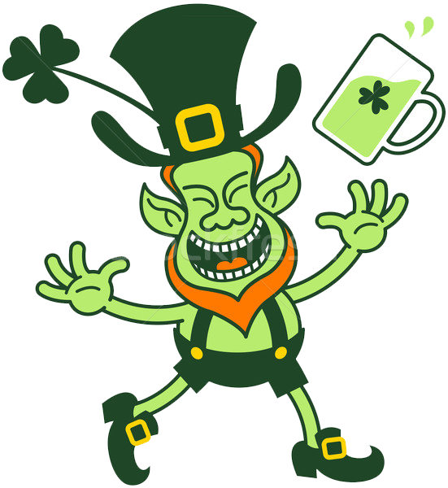

 ATIVIDADE - Criar um site com 4 páginas, 1 menu horizontal, 1 menu vertical, conteúdo (Texto, imagens e Vídeo) - deixar uma página para implementação de um jogo da velha. Aplicar um belo layout, faça um projeto visual de qualidade. Mussum Ipsum, cacilds vidis litro abertis. Atirei o pau no gatis, per gatis num morreus. Quem num gosti di mum que vai caçá sua turmis! Delegadis gente finis, bibendum egestas augue arcu ut est. Nec orci ornare consequat. Praesent lacinia ultrices consectetur. Sed non ipsum felis. Diuretics paradis num copo é motivis de denguis. in elementis mé pra quem é amistosis quis leo. Copo furadis é disculpa de bebadis, arcu quam euismod magna. Interagi no mé, cursus quis, vehicula ac nisi. Detraxit consequat et quo num tendi nada. Praesent vel viverra nisi. Mauris aliquet nunc non turpis scelerisque, eget. Suco de cevadiss, é um leite divinis, qui tem lupuliz, matis, aguis e fermentis. Quem manda na minha terra sou Euzis!